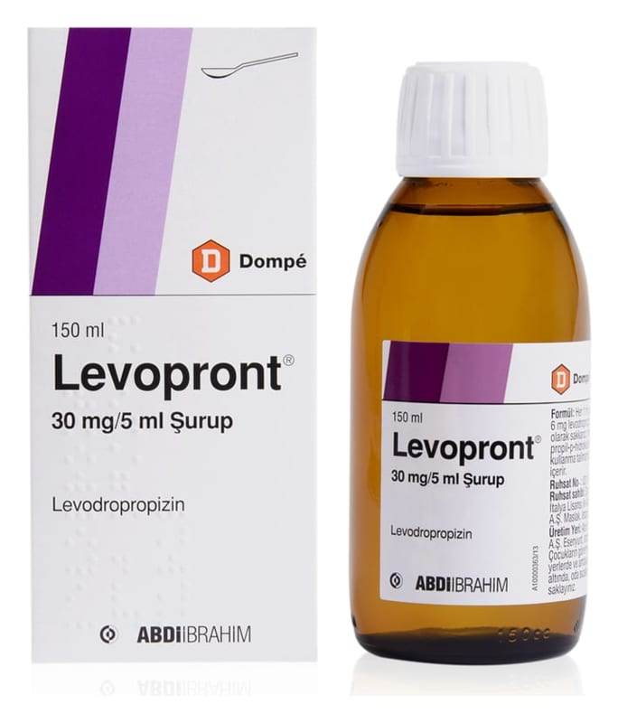

Levopront 30 mg/5 ml Şurup, 150 ml

Ne için kullanılır
KT · Bölüm 1LEVOPRONT, 150 ml’lik şişede, 5 ml’lik işaretli ölçek ile beraber sunulan şuruptur. LEVOPRONT etkin madde olarak levodropropizin içerir. Çeşitli nedenlere bağlı kuru öksürüğün giderilmesinde kullanılır.